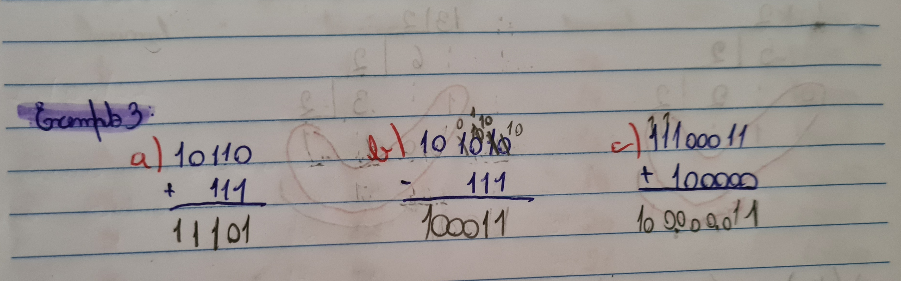
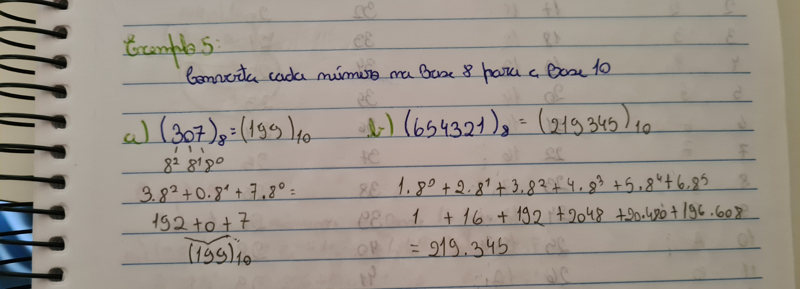

Para começar os conteúdos que tive facilidade foi principalmente em Sistema de númeraçao com a soma de binários e conversão de cada número da base 8 para a base 10.
Aqui nessa parte do conteúdo tive quase nenhuma dificuldade, com a soma de binários consegui me sair muito bem. A soma de binários é quase igual a soma de decimais, só o que muda é que precisamos saber que em binário 1+1 é 10, 1+0 é 1, 0+1 é 1 e 0+0 é 0. Sendo assim, o 1 do estouro e que passa para a próxima casa.
Essa foto é da soma de binário de uma atividade realizada na aula do dia 22/03/2022
Essa conversão assim como binário para decimal, a conversão basta ir multiplicando por 8 em potencia, como no exemplo abiaxo:
